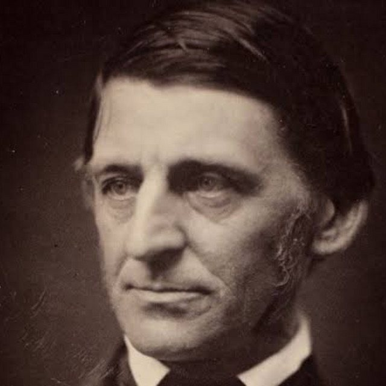

The Eclectic Polymath Podcast · Archive
#137 Ralph Waldo Emerson: The Architecture of Self-Reliance

About this episode
Ralph Waldo Emerson helped turn self-reliance into one of the defining ideas of American culture.
This episode traces Emerson’s path from a Unitarian minister shaped by grief and personal loss to the central figure of American Transcendentalism. It gets into his rejection of inherited religious authority, his belief in direct intuition and nature, and the ideas that would make essays like Self-Reliance feel foundational to a distinctly American vision of the individual.
We also get into his relationships with Henry David Thoreau and Margaret Fuller, his eventual abolitionism, and the tension between Emerson’s philosophy and the more complicated realities of American society. This is a story about independence, spiritual intuition, and how one thinker helped build the language Americans still use to talk about authenticity, ambition, and trusting yourself.
Key points
- Ralph Waldo Emerson helped turn self-reliance into one of the defining ideas of American culture.
- This episode traces Emerson’s path from a Unitarian minister shaped by grief and personal loss to the central figure of American Transcendentalism.
- It gets into his rejection of inherited religious authority, his belief in direct intuition and nature, and the ideas that would make essays like Self-Reliance feel foundational to a distinctly American vision of the individual.
- We also get into his relationships with Henry David Thoreau and Margaret Fuller, his eventual abolitionism, and the tension between Emerson’s philosophy and the more complicated realities of American society.
- This is a story about independence, spiritual intuition, and how one thinker helped build the language Americans still use to talk about authenticity, ambition, and trusting yourself.
More like this
 #221 The Homestead: Who Got Set Up, Who Got StrippedOctober 18, 20261:14:22
#221 The Homestead: Who Got Set Up, Who Got StrippedOctober 18, 20261:14:22 #219 The Grove & The Americana: Fake Towns, Real EmpireOctober 17, 202649:36
#219 The Grove & The Americana: Fake Towns, Real EmpireOctober 17, 202649:36 #190 Church Hierarchy: From Apostles and Bishops to Pastors and PopesOctober 5, 20261:04:30
#190 Church Hierarchy: From Apostles and Bishops to Pastors and PopesOctober 5, 20261:04:30 #189 DC's Identity Crisis: How the Original Superhero Empire Lost Hollywood to MarvelOctober 4, 202648:08
#189 DC's Identity Crisis: How the Original Superhero Empire Lost Hollywood to MarvelOctober 4, 202648:08